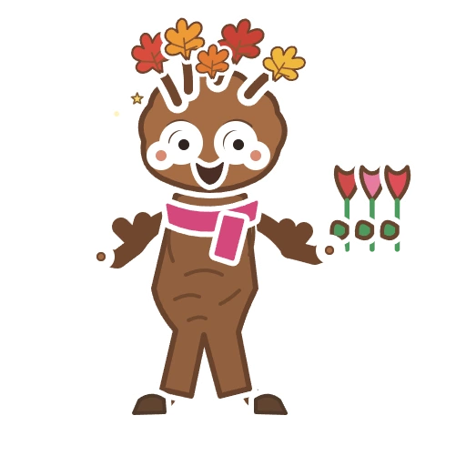
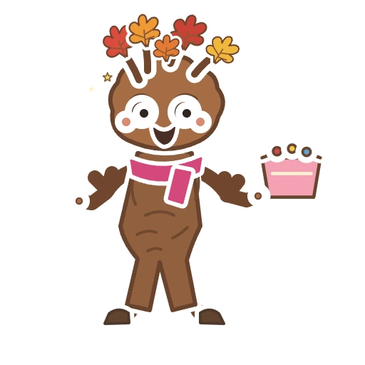
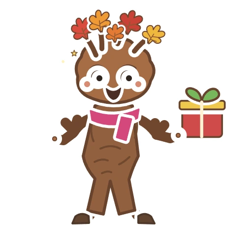
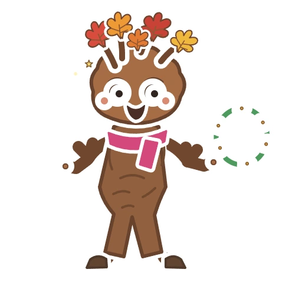
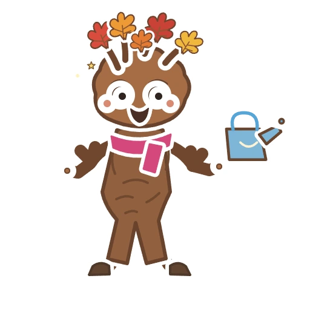
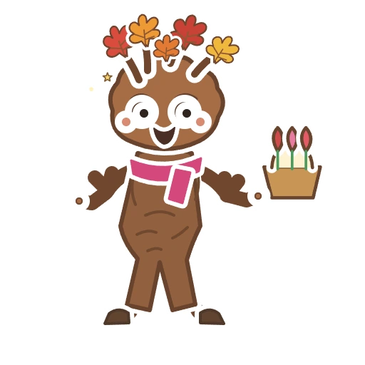

С 8 марта! Расти и сияй!
Тюльпаны
Цветы? Принёс. С горшком?
ТортСамый тёплый букет — тебе.
Мимоза и праздничный бокал
Подарок ветвится!
Подарок
Ты сегодня особенно расцветаешь!
Венок из цветов
Поливаю — пусть всё цветёт.
Полив весенних цветовМимоза, держись: Клён рядом.
Букет мимозыСладкий день для тебя!
Кексы
Весне — зелёный свет!
Корзина тюльпанов